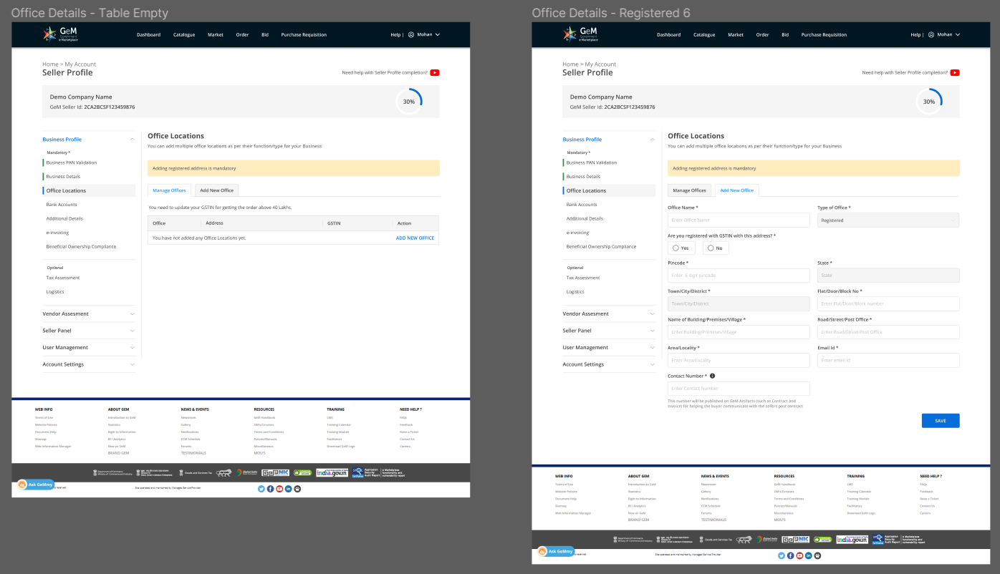

Designing for Scale - My experience working at Government eMarketplace
During the summer of 2022, I had the incredible opportunity to intern at Government e-Marketplace (GeM) as a UX/UI Designer. GeM is a one-stop marketplace hosted by the Ministry of Commerce and Industry, Government of India, aimed at transforming the way government ministries, departments, and public sector undertakings procure goods and services. As part of the GeM Revamp project, I joined the organization to be part of the redesign project of six of the most important modules across the buyer and seller platforms. This blog recounts my experience during this two-month internship and the valuable lessons I learned along the way.

But what is Government e-Marketplace?
GeM serves as a pivotal marketplace connecting sellers, including resellers, manufacturers, small-scale and handicraft industries, with buyers such as central and state industries, public sector undertakings, and more. With over 31 lakh products in approximately 11,000 categories, GeM has become one of the largest marketplaces in the country, facilitating trade worth over ₹3.5 lakh crores in a single financial year. The immense scale and impact of this platform intrigued me, as I knew I would be designing a solution used by millions of people across India.
Getting started with the project
My journey at GeM began by immersing myself in the context of the project. I familiarized myself with different departments, interacted with HR and department heads, and gained an understanding of the office environment. It was the first time I was working in some experience, so it was a dreamlike to see it happen. Training sessions introduced me to the various sections of the product, its purpose, and the technical aspects involved. I had seen my dad talking about the GeM portal, and how they use it in their organisation as an OEM manufacturer to sell their products. Another friend's dad who worked in a central university mentioned how her dad used it for procurement purposes. It was great to see the product in action and seeing people around me being impacted by it.
Exploring the product using test accounts and developer platforms allowed me to grasp its intricacies and the diverse needs of its users. To understand more, I conducted heuristic testing through guided and unguided walkthroughs, employing tools like the Lighthouse Accessibility Testing tool.
Understanding User Challenges
To revamp the user experience effectively, it was essential to comprehend the pain points and expectations of the users. Through interactions with the customer care team and engagement with external and internal stakeholders, we compiled a list of common problems and frequently asked questions for each module. These challenges were graded based on priority, forming our key performance indicators for the project. Subsequently, we collaborated with technical teams and module managers of each concerned module to understand the user flow in detail. They provided us with comprehensive insights, demonstrated the testing sandbox, and addressed our queries. We also noted any missing features, compliance with government guidelines, and changes needed based on legal requirements.
Mapping the User Journey
Once we gathered all the information, we documented the user journey through journey maps on FigJam. This high-level visualization allowed us to identify pain points, redundancies, and areas for improvement. Additionally, we reviewed the existing product's screen designs and added comments wherever we had doubts or suggested changes. The entire user flow was shared with the product and engineering team of the respective module for validation and feedback.
As GeM was continuously developing, consolidating the entire flow from scratch was time-consuming but provided us with an in-depth understanding of the product.
Creating a seamless experience
With validated user flows, we began brainstorming and creating wireframes as a team. Low-fidelity prototypes were developed by hand-drawing key screens, enabling us to structure the pages effectively. Multiple iterations and discussions ensued until we arrived at a refined wireframe. Drawing inspiration from existing design guidelines, we crafted the screens, focusing on consistency, modularity, and customization. After internal reviews, we presented the finalized designs to the heads, including CEOs and Secretaries, for their input.
Making the Design Guidelines
Towards the end of my internship, I was entrusted, along with another designer, with the task of creating the comprehensive design guide for the GeM portal. This provided an opportunity to delve deeper into design principles, web design best practices, and create a solid foundation for the portal's design. The design guide facilitated faster design and development of the modules, prioritizing UX improvements over visual aspects.
What I learnt
My internship at GeM was a significant learning experience, exposing me to the challenges of designing for a large-scale product. The diversity of users, complex use cases, and adherence to government guidelines required a comprehensive approach to design. I honed my skills in Figma, particularly in using components, which proved invaluable during the creation of the design guidelines. I developed the ability to lead discussions, justify design decisions, and differentiate between good and bad designs. Embracing minimalism and simplicity, I focused on creating experiences that were user-friendly and developer-friendly.
My internship at Government e-Marketplace was a rewarding experience that allowed me to contribute to the transformation of a major e-commerce platform. Designing for millions of users and addressing complex user challenges taught me invaluable lessons about user experience design at scale. I am grateful for the opportunity to have worked alongside talented professionals and to have made a positive impact on the GeM Revamp project. It was a summer well-spent, where I acquired new skills, expanded my knowledge, and paved the way for a promising future in UX/UI design.